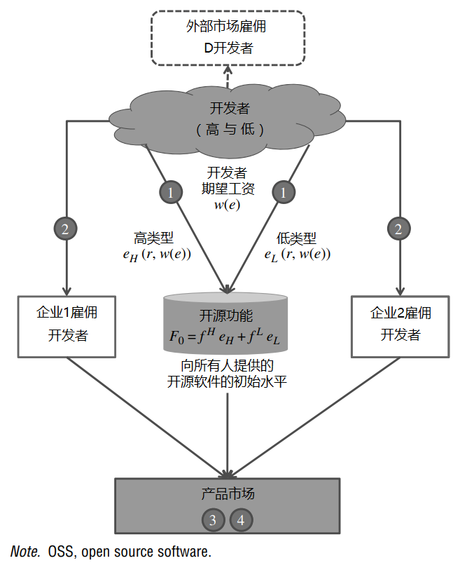

<!DOCTYPE html>
<html lang="en">
  <head>
    <meta charset="utf-8" />
    <meta name="viewport" content="width=device-width, initial-scale=1.0, maximum-scale=1.0, user-scalable=no" />

    <title>reveal-md</title>
    <link rel="shortcut icon" href="./favicon.ico" />
    <link rel="stylesheet" href="./dist/reset.css" />
    <link rel="stylesheet" href="./dist/reveal.css" />
    <link rel="stylesheet" href="./dist/theme/black.css" id="theme" />
    <link rel="stylesheet" href="./css/highlight/base16/zenburn.css" />


  </head>
  <body>
    <div class="reveal">
      <div class="slides"><section  data-markdown><script type="text/template">## 企业与开发者市场



</script></section><section  data-markdown><script type="text/template">
## 开发者发出的信号

开放源码为高技能的开发者提供了一种机制，通过向开放源码贡献功能，向企业发出他们的技能（类型）。开放源码的贡献为企业提供了一个关于开发者技能的可靠信号，因为潜在的雇主可以审查开发者的贡献（Leppamaki 和 Mustonen 2009）。这种贡献的动机与解释开发者的开源贡献的经济信号原理是一致的（Lerner 和 Tirole，2002）。

</script></section><section  data-markdown><script type="text/template">
## 开发者的竞争市场中的均衡

* **开发者对企业的溢出效应**：开发者对开源的贡献越多，企业对于他们的竞争就越不激烈，这样就起到了减少工资的作用
* **企业与企业之间会发生溢出效应**：强制分享的设置，会导致企业对于开发者人才的竞争，不那么激烈

</script></section><section  data-markdown><script type="text/template">
## 如何理解企业之间通过开源竞争？

有人认为：经济学，就是研究“稀缺性”的学科，在传统的世界里，我们谈到稀缺性，往往都会想到“各种资源”、“生产资料”。但是在数码的世界里，几乎所有的资源、资料，都是可以被无限复制的，随着网络建设的不断发展，我们甚至无需“软盘”、“光盘”、“U盘”，而且网络传输的费用也几乎等于0。

在数码的世界里，唯有“时间”是稀缺的，我们有时候称之为“眼球经济”、或者“注意力经济”、或者“流量经济”，全人类的所有可使用的时间，是一个很大的常数。各个开源社区，当然还有互联网、SNS、短视频和购物平台，都在争夺这些时间与注意力。

我们可以从这个角度，来理解企业之间的竞争，企业开源不仅仅是与其他开源企业在竞争，而是在与所有的潜在竞争对手，争夺开发者的注意力（业余时间）。

</script></section><section  data-markdown><script type="text/template">
## 如何理解开源与商业的关系？

</script></section></div>
    </div>

    <script src="./dist/reveal.js"></script>

    <script src="./plugin/markdown/markdown.js"></script>
    <script src="./plugin/highlight/highlight.js"></script>
    <script src="./plugin/zoom/zoom.js"></script>
    <script src="./plugin/notes/notes.js"></script>
    <script src="./plugin/math/math.js"></script>
    <script>
      function extend() {
        var target = {};
        for (var i = 0; i < arguments.length; i++) {
          var source = arguments[i];
          for (var key in source) {
            if (source.hasOwnProperty(key)) {
              target[key] = source[key];
            }
          }
        }
        return target;
      }

      // default options to init reveal.js
      var defaultOptions = {
        controls: true,
        progress: true,
        history: true,
        center: true,
        transition: 'default', // none/fade/slide/convex/concave/zoom
        plugins: [
          RevealMarkdown,
          RevealHighlight,
          RevealZoom,
          RevealNotes,
          RevealMath
        ]
      };

      // options from URL query string
      var queryOptions = Reveal().getQueryHash() || {};

      var options = extend(defaultOptions, {}, queryOptions);
    </script>


    <script>
      Reveal.initialize(options);
    </script>
  </body>
</html>
